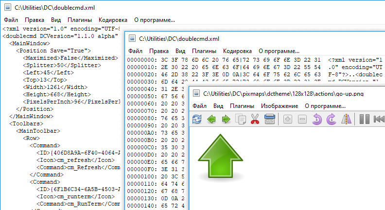

Встроенный просмотрщик предназначен для просмотра файлов любого размера в текстовом, шестнадцатеричном или двоичном формате, а также файлов изображений.

Выделенный текст будет автоматически скопирован в буфер обмена.
По умолчанию вызов просмотрщика назначен на клавишу F3, мы можем изменить это в настройках. Также доступен режим быстрого просмотра (Ctrl+Q): вместо отдельного окна будет использоваться противоположная (неактивная) файловая панель.
Поддерживаемые форматы изображений: BMP, CUR, GIF, ICNS, ICO, JPEG, PNG, PNM (PBM, PGM и PPM), PSD, TIFF, XPM. Кроме того, если необходимые библиотеки доступны (рядом с исполняемым файлом Double Commander или в PATH):
HEIF/HEIC и AVIF: libheif-1.dll (Windows) или libheif.so.1 (Linux и другие Unix-подобные системы)
SVG и SVGZ: libcairo-2.dll, librsvg-2-2.dll и libgobject-2.0-0.dll (Windows) или libcairo.so.2, librsvg-2.so.2 и libgobject-2.0.so.0 (Linux и другие Unix-подобные системы)
WebP: libwebp.so.n, где "n" – 7, 6 или 5 (Linux и другие Unix-подобные системы)
Double Commander поддерживает библиотеку TurboJPEG: это кодек JPEG, который использует SIMD инструкции для ускорения декодирования и кодирования изображений. Если доступна следующий библиотека: libturbojpeg.dll (Windows), libturbojpeg.so.0 (Linux и другие Unix-подобные системы) или libturbojpeg.dylib (macOS(*)).
Встроенный просмотрщик поддерживает сохранение в следующие форматы изображений: BMP, ICO, JPEG (можно выбрать качество от 1 до 100), PNG (Double Commander будет использовать ту же глубину цвета, что и в исходном изображении) и PNM (Double Commander будет использовать двоичные форматы, глубина цвета будет выбрана автоматически: 1, 8 или 24 бита на пиксель).
Примечание: При модификации изображения мы должны сохранить все изменения командами Сохранить или Сохранить как: Double Commander не проверяет статус файла (изменён или нет) при закрытии окна просмотрщика или при переходе к другому файлу.
Назначить или изменить горячие клавиши для команд, доступных в просмотрщике, можно в разделе настроек Клавиши > Горячие клавиши (переключитесь на категорию Встроенная программа просмотра). Горячие клавиши можно задать отдельно для текстового режима и режима просмотра изображений.
Вид и содержимое главного меню зависит от режима просмотра: текст, изображение или WLX-плагин.
Пункты Предыдущий и Следующий служат для загрузки предыдущего или следующего файла в каталоге. Используется порядок сортировки в файловой панели.
Пункты Сохранить и Сохранить как... доступны только при просмотре изображений.
Печать... – открывает системный диалог отправки файла на печать. Печать доступна только при просмотре с плагинами, поддерживающими печать файлов.
Параметры печати... – открывает диалог для настройки границ печати (левое, правое, верхнее и нижнее поля страницы).
Перезагрузить – Double Commander принудительно перечитает файл, не закрывая окно просмотрщика. Это удобно, если файл был изменён внешней программой.
Автообновление – только для режима текста: если включено, Double Commander будет следить за размером файла и при его изменении перечитывать файл и прокручивать его содержимое до конца. Это удобно для просмотра постоянно обновляемых файлов протокола. Этот режим применяется только к текущему файлу и отключается при переходе к другому файлу или при закрытии окна просмотрщика.
Выход – Закрыть окно просмотрщика.
Меню содержит команды выделения и копирования текста, а также команды поиска по содержимому просматриваемого файла: Найти, Найти далее и Найти предыдущее.
Параметры поиска:
С учётом регистра – указывает, что прописные буквы нужно отличать от строчных. Т.е. "Fallout" и "fallout" будут восприниматься как разные.
Шестнадцатеричное – поиск шестнадцатеричных символов (без учёта регистра, с пробелами между символами или без, например, "C0 C1 C2" или "c0c1c2").
Регулярные выражения – если включено, можно использовать регулярные выражения.
Назад – переключает направление поиска: поиск с конца файла вместо поиска с начала.
Это меню для переключения режима просмотра и содержит несколько дополнительных опций.
Предварительный просмотр – Показать или скрыть панель предварительного просмотра.
Программа автоматически выбирает подходящий режим просмотра файлов, следующие пункты позволяют переключить его принудительно:
Показать как текст – Показать содержимое файла (или вывод консольной команды, смотрите Файловые ассоциации) как обычный текст. Мы можем задать максимальное количество символов в одной строке до принудительного переноса на новую (по умолчанию 1024).
Показать в двоичном виде – Показать содержимое файла как есть. Непечатные символы будут отображаться точками, тем не менее, при копировании текста будут учитываться управляющие символы (перевод строки, возврат каретки, табуляция и так далее). Используется фиксированная ширина строки в 80 символов.
Показать в шестнадцатеричном виде – В окне будут отображаться три колонки: смещение от начала файла (в байтах), 16 символов в шестнадцатеричном представлении и те же 16 символов в виде простого текста. Непечатные символы будут отображаться точками. При выделении значений во второй колонке, будут выделены соответствующие символы в третьей колонке (и наоборот).
Показать в десятеричном виде – Как предыдущее, но байты будут представлены в десятичной системе счисления.
Показать как текст с разрывами строк – Как Показать как текст, но с переносом строк, которые не умещаются в окне (по границе слов).
Показать в режиме "Книга" (текст с колонками) – Особый режим просмотра: текст будет отображаться в несколько колонок (как книжный разворот или газета). Мы можем задать шрифт и его размер, цвет текста и фона и количество колонок (1, 2 или 3).
Графика – переключает на просмотр изображений. Список поддерживаемых форматов изображений смотрите в начале страницы.
Плагины – Просмотр с помощью WLX-плагинов. Если выбранный файл может быть открыт несколькими установленными плагинами, то повторные вызовы этой команды будут переключать их по кругу.
Плагины имеют приоритет над режимом Графика.
Показывать текстовый курсор – включает отображение мигающего текстового курсора.
При просмотре файлов в текстовых режимах: меню со списком доступных кодировок текста, по умолчанию включено автоопределение.
При использовании плагинов это меню включает только три пункта:
Auto-detect – автоматическое определение кодировки.
ANSI – системная кодировка ANSI по умолчанию (зависит от локали).
OEM – системная кодировка OEM (DOS) по умолчанию (зависит от локали).
Меню Изображение будет недоступно при просмотре файлов GIF.
В размер окна – изменяет размер изображения так, чтобы оно заполняло окно просмотрщика (соотношение сторон будет сохранено автоматически).
Только большие в размер окна – изменяет размер изображения, только если оно больше текущего размера окна (соотношение сторон будет сохранено автоматически).
По центру окна – Изображение будет отображаться в центре окна просмотрщика вместо верхнего левого угла.
Подменю Повернуть включает в себя несколько похожих действий:
Первые три команды поворачивают изображение на указанное количество градусов вокруг его центра: Повернуть на 90° (90 градусов вправо), Повернуть на 180° и Повернуть на 270° (90 градусов влево).
Отразить по горизонтали – переворачивает изображение по горизонтали, то есть слева направо.
Отразить по вертикали – переворачивает изображение по вертикали, то есть сверху вниз.
Увеличить и Уменьшить – команды для изменения масштаба изображения.
Размернуть на весь экран – переключает окно в полноэкранный режим (содержимое окна без типичного оконного интерфейса операционной системы). Этот режим доступен не только при просмотре изображений, просто используйте горячие клавиши (по умолчанию Alt+Enter).
Подменю Скриншот – создание снимка рабочего стола, сразу или с задержкой (3 или 5 секунд).
При использовании плагинов это меню включает только три пункта: В размер окна, Только большие в размер окна и По центру окна.
Просто название просмотрщика.
Несколько команд встроенного просмотрщика и дополнительные инструменты, собранные в панель инструментов. Только при просмотре изображений.

Перезагрузить текущий файл – Double Commander принудительно перечитает файл, не закрывая окно просмотрщика. Это удобно, если файл был изменён внешней программой.
Кнопки Загрузить предыдущий файл и Загрузить следующий файл служат для загрузки предыдущего или следующего файла в каталоге. Используется порядок сортировки в файловой панели.
Копировать файл – смотрите Копирование/перемещение файлов.
Переместить файл – смотрите Копирование/перемещение файлов.
Удалить файл – удалит просматриваемый файл с запросом подтверждения.
Увеличить и Уменьшить – команды для изменения масштаба изображения.
Повернуть на -90 градусов – поворачивает изображение на 90 градусов влево вокруг его центра.
Повернуть на +90 градусов – поворачивает изображение на 90 градусов вправо вокруг его центра.
Зеркально – Команда Отразить по горизонтали: переворачивает изображение по горизонтали, то есть слева направо.
Следующая группа только для GIF-анимации:
Пауза/Воспроизведение – приостанавливает воспроизведение анимации.
Предыдущий кадр и Следующий кадр – переключают кадры анимации назад и вперед.
Экспорт кадра – позволяет сохранить текущий кадр анимации.
Следующая группа кнопок связана с выделением:
Выделение – включает инструмент выделения (прямоугольного).
Обрезать – обрезать изображение по выделению.
Красные глаза – функция удаления эффекта красных глаз.
Следующая группа кнопок связана с рисованием:
Рисование – включает инструменты рисования.
Отменить – отменяет последнее действие.
Меню выбора инструмента рисования: Карандаш, Прямоугольник и Окружность.
Ширина – Меню для выбора ширины линии (от 1 до 25 пикселей).
Цвет – позволяет задать цвет линии.
Размернуть на весь экран – переключает окно в полноэкранный режим (содержимое окна без типичного оконного интерфейса операционной системы) и обратно. Этот режим доступен не только при просмотре изображений, просто используйте горячие клавиши (по умолчанию Alt+Enter).
Изменить размер – Инструмент изменения размера изображения позволяет указать ширину и высоту в пикселях (соотношение сторон будет сохранено автоматически).
При разворачивании окна на весь экран станет доступна дополнительная кнопка Слайд-шоу: мы можете включить автоматическую загрузку следующего изображения в текущем каталоге и задать время отображения файла (от 1 до 25 секунд).
Вид и содержимое строки состояния зависит от режима просмотра: текст, изображение или WLX-плагин.
В начале строки состояния отображается номер открытого файла и общее количество файлов в текущем каталоге.
Текст: позиция в содержимом файла (в байтах и процентах), размер файла и кодировка текста.
Изображение: текущее разрешение (в пикселях и процентах), реальное разрешение файла и размер выделения (при использовании инструмента выделения).

WLX-плагин: имя плагина и кодировка.
В конце строки состояния отображается полное имя просматриваемого файла.
Панель в левой части окна, файлы каталога отображаются в виде эскизов (с именем файла под эскизом). Похоже на режим эскизов в файловой панели.
Используется порядок сортировки в файловой панели. Файл, с которым был запущен просмотрщик, всегда будет первым в списке.
Панель предварительного просмотра можно раздвинуть и получить список эскизов в несколько колонок.
Отдельная панель инструментов с несколькими часто используемыми функциями: Перезагрузить текущий файл, Загрузить предыдущий файл, Загрузить следующий файл, Копировать файл, Удалить файл и Переместить файл, смотрите описание аналогичных кнопок выше.
В программе просмотра есть возможность скопировать или переместить просматриваемый файл с помощью горячих клавиш или кнопок на панели инструментов или на панели предварительного просмотра (внутренние команды программы просмотра cm_CopyFile и cm_MoveFile). Можно указать до 5 каталогов и переключаться между ними:
Это удобно, если нужно разложить просматриваемые файлы по разным каталогам или сделать дополнительную копию.
Смотрите описание разделов настроек Double Commander: Инструменты > Просмотр.